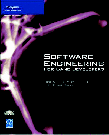

Dr. Dobb's Journal July 2006
It's one of the oldest debates in computing: Should we teach bottom-up or top-down? Should students start with bits and gates, and then move on to assembler, C, and high-level languages, so that they understand what's going on inside the box? Or should we put the power into their hands on Day One, then peel away the mystery one layer at a time to connect their interpreted, garbage-collected, concurrent, object-oriented language to the metal that makes it live?
Noam Nisan and Shimon Schocken
MIT Press, 2005; 368 pp.; $50.00; ISBN 026214087X
In practice, most schools—even the best ones—do neither. Most students graduate today without a clear understanding of how the code they write actually works. The reason is that modern architectures are much more complex than those of the early 1980s. Back then, there was a 16-bit processor, 64K of RAM, keyboard, screen, and disk. Today, the processor itself has more components than that, including multiple speculative pipelines and two levels of on-chip cache. There are over a dozen distinct layers between the x+=2; in your Java code and the instructions that make it happen. It's no wonder students can't figure it all out in four years.
Noam Nisan and Shimon Schocken's The Elements of Computing Systems is a valiant attempt to return us to our roots. Its subtitle is "Building a Modern Computer from First Principles," and that's exactly what it does. The authors begin with Boolean logic; successive chapters cover logic gates, machine language, computer architecture, the design of a simple virtual machine and a high-level language to run on it, a bare-bones compiler, and finally a little operating system. At each stage, you are shown how to build part of the next layer, and then asked to build the rest. Exercises are done using a set of simulators and visualization tools that come with the book (which can also be downloaded from the authors' web site).
Does it work? I don't know. It certainly worked for who I am today, and I'd like to think my 19-year-old self would have been able to keep up, but I could be flattering myself. It's a lot of ground to cover: The exercises are not small, and students would have to assimilate several Very Big Ideas to get through them. I'd be interested in hearing from anyone who's used it, either as an instructor or as a student.
John P. Flynt and Omar Salem
Course Technology PTR, 2004; 904 pp.; $59.99; ISBN 1592001556
John Flynt and Omar Salem's Software Engineering for Game Developers is superficially a very different book, but as Terry Pratchett once wrote, where people stand is less important than which way they face. Gaming is one of the few sectors in which consumers demand the same level of quality from software that they do from hardware: With thousands of alternatives to choose from, they can and do treat programs that crash or lose data with the disdain they deserve. As a result, quality standards are often more stringent than they are in the commercial arena.
Between them, Flynt and Salem have spent more than 40 years building complex systems, and teaching others how to do so. They are firm believers in Big Design Up Front (BDUF): The second chapter of their book covers requirements analysis, while the third introduces UML. Later chapters discuss reuse, risk analysis, configuration management, testing, documentation, and all the other things that every successful project I've ever seen has relied on.
But "discuss" is the wrong word—"prescribe" would be better. This book is not a smorgasbord of compare and contrast. Its authors clearly believe there's a right way to get things built, and that your choices as a developer are adoption or failure. Practitioners of Extreme Programming and other forms of code-worship will disagree, but as Flynt and Salem point out, you have to know what the game's going to contain well in advance of its release to do the artwork, music, and marketing. "We'll make it up as we go along" simply isn't an option in gaming; with luck, and with books like this one, perhaps it will stop being common practice in the rest of the industry.